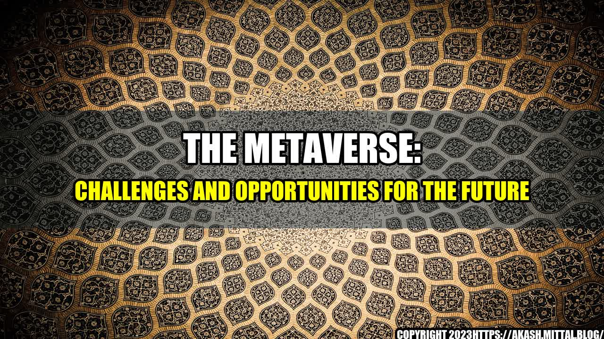

The Metaverse: Challenges and Opportunities for the Future

Imagine a world where every aspect of your life is digitalized; where you can visit any place in the world without actually stepping out of your home, and where you can connect with people across the globe seamlessly. Welcome to the Metaverse!
Enter the Metaverse
It was a sunny day, and Jane was sitting in her room, staring at her laptop. Suddenly, her friend invited her to join a virtual event in the Metaverse. Jane had heard about this new technology, but she had never experienced it before. She decided to give it a try and put on her VR headset.
As soon as she entered the Metaverse, she was amazed. She could see herself in a virtual world, surrounded by other avatars. She walked around, exploring this new place, and joined several virtual events and communities. She made new friends and even attended a virtual concert. It was an incredible experience that she would never forget.
However, as she delved deeper into the Metaverse, she realized that there were several challenges that needed to be addressed. While this new world offers endless possibilities, it also poses several risks and threats that need to be tackled.
The Challenges of the Metaverse
The Metaverse is still in its early stages, and several technical, social, and ethical challenges need to be addressed before it can be widely adopted.
Technical Challenges
The Metaverse is a complex system that requires seamless integration between several technologies such as VR, AR, blockchain, and cloud computing. It requires high-speed internet connectivity, low latency, and high bandwidth.
One of the biggest technical challenges is interoperability. There are several Metaverse platforms, and they operate independently. Users cannot move their avatars and assets from one platform to another. This is a significant barrier to the growth of the Metaverse, and it needs to be addressed.
Social Challenges
The Metaverse is a new world, and it requires a new set of social norms and etiquettes. Cyberbullying, harassment, and hate speech are pervasive in virtual communities, and they need to be addressed.
Another significant social challenge is the digital divide. The Metaverse offers endless possibilities, but it also requires expensive hardware and software. Not everyone can afford to invest in a VR headset or a gaming laptop. This could create a new form of inequality that could lead to social exclusion.
Ethical Challenges
The Metaverse is also a potential breeding ground for several ethical issues. Privacy, data security, and ownership of virtual assets are challenging questions that need to be addressed. Who owns the virtual real estate? Who owns the virtual currency? How do we regulate virtual transactions?
Another ethical issue is the creation of artificial intelligence and digital humans. Who owns the data that drives the AI? What happens when AI goes rogue? How do we prevent AI from being used for malicious purposes?
The Opportunities of the Metaverse
The Metaverse has the potential to disrupt several industries, create new business models, and revolutionize the way we live, work, and play.
Business Opportunities
The Metaverse is a new economy, and it offers several business opportunities. Virtual real estate, virtual fashion, and virtual events are some of the areas that are poised to grow. Companies that can create a seamless and immersive experience in the Metaverse can create a significant competitive advantage.
Creative Opportunities
The Metaverse is also a new canvas for creativity. Artists, designers, and architects can create new forms of digital art and architecture. Musicians and entertainers can perform on virtual stages to a global audience. The Metaverse offers endless possibilities for creativity and expression.
Social Opportunities
The Metaverse can also be a new hub for social interactions. It can connect people across the globe and create new communities based on shared interests and passions. The Metaverse can democratize access to education, healthcare, and other essential services by making them accessible to anyone with an internet connection.
The Future of the Metaverse
The Metaverse is still in its infancy, but it has the potential to reshape our world. To realize its full potential, we need to address the challenges and seize the opportunities that lie ahead.
- We need to create a unified Metaverse that is interoperable and accessible to everyone.
- We need to create a new social contract for the Metaverse based on respect, empathy, and inclusivity.
- We need to create a new ethical framework for the Metaverse that balances innovation and creativity with privacy and security.
The Metaverse is not just a technological wonder, it is a social and cultural phenomenon that has the power to transform our world. Let's create a Metaverse that is safe, inclusive, and empowering.
Curated by Team Akash.Mittal.Blog
Share on Twitter Share on LinkedIn